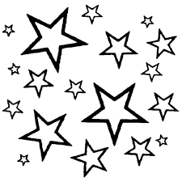

Tommy's Website
8/25/23 - In class, we created our websites and began to learn the basics of HTML. We learned how to change text (write new text, italicize, bold, change color, instert images, etc.) We were also introduced to the engineering process and safety guidelines.
9/11/23 - In class, we began learning how to CAD and we created a cup on TinkerCad. We had a challenge where we created a kitchen appliance and voted for whose was the best. We began drafting ideas for our Rube Goldberg machines and chose which design our group was going to go with. We then created the design as a CAD and began to make the pieces out of cardboard. After we were done outlining the pieces with pencil, we began to cut them out of the cardboard.
9/15/23 - After cutting out all the pieces of cardboard for our Rube Goldberg machine, we began to put it all together. There was some difficulty remembering which pieces went where because we didn't really label them, so thats definitely something we should have done. Other than that it was all working, but one of our pieces was too short so we had to fix it. That was the only real setback we had, and we finished really early. I forgot to bring the toy car, so we couldnt test it the day we finished, but I brought it on friday and we tested it. Some of the trials didnt work, as the original car we were using was too light, so it just flew down the ramp and didnt pop the balloon. We switched the car out for a heavier one, and it ended up working. Some of the trials didnt work, probably because the car was still a little too light, but out of five trial, two of them worked.
9/29/23 - We began our computer engineering unit with notes and a video with a note taker. Our challenge was making a boat that could hold scraps of metal without sinking, and the person with the heaviest boat without it sinking wins. Anushka and I didn't win but our boat didnt sink. The next thing we did was a computer dissection where we took apart an old computer from the school. It was pretty easy when we were taking it apart, but putting it back together got pretty difficult. We got stuck trying to screw the CPU back in for a while but after a couple minutes Mr Kim came over and helped us. Figuring out which wires went where was also really difficult and we spent a long time trying to figure it out. I think we figured it out, but I don't really know. But once we decided it was good enough, the disk drive was sticking up at the top because some of the wires were getting in the way. We just ended up forcing it down as far as it would go and just put the cover back on and put the computer back. After that, we colored the map of the computer and where each component was.
10-6-23 - We started our bioengineering unit by looking at slides and filling in a worksheet based on the slides. Our project for this unit was to create a prosthetic hand that can pick up an empty water bottle. Our first design was this:

This design didn't work because the top joint didn't move correctly and it wasn't big enough, so we created another design. We had help from Jeseca's friend for this design, so thank you and credit to her for helping us make it.
10-20-23 - This week we were introduced to aerospace engineering. We took notes on a slide, and then we began to brainstorm ideas for our bottle rocket project. First, we looked up some bottle rocket designs to see which ones we liked best, and then drew a sketch of the design we chose. After completing the sketch, we made our CAD of the rocket. Here is our CAD:

The CAD was a little difficult to do, and it definitely didn't look very much like the final product, but it was close enough. After turning in the CAD on google classroom, we began to create our actual bottle rocket. We used cardborn for the little flaps at the bottom, and then we used paper for the cont at the top. We took some time trying to figure out which way to put the flaps, but eventually we decided. The cone was also difficult to make for some reason. Originally we were gonna make it out of cardboard, but that didnt work, so we ended up using paper. The paper cone failed like 3 times before we actually create one that worked, and then we taped it together and hot glued it on. After everything was on, the rocket was pretty much done. We just needed to hot glue the perncil on for the rail, and we were done. We decorated the flaps with a smiley face and our initials, and then we were done. After that, we tested to see how well it would fly, and it flew pretty well I think. Here is a video of the test:
10-26-23 - This week we learned about environmental engineering. Our project for this unit was to create a filter to clean really dirty water. The bottom layer of our filter was cotton, the next layer was sand, the next layer was the small pebbles, and the top layer was the bigger pebbles. Here is some pictures of this filter:

This filter got the water pretty clean, but not fully, even after filtering it multiple times. We made a new filter out of cotton and small pebbles that we put under the original filter to make a double filter. This worked pretty well, and it got the water mostly clear. Here is some pictures of the double filter and the final product of the water: